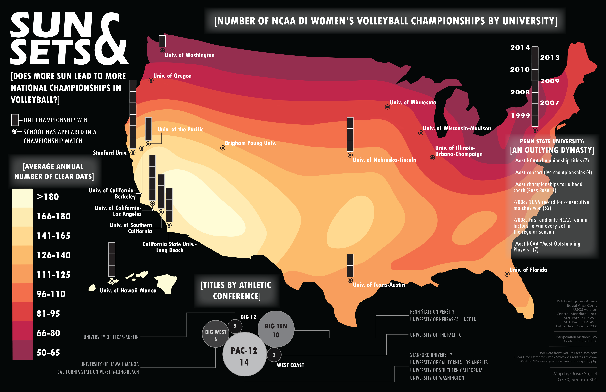

This map depicts number of Division 1 Womens' Volleyball Championships and the annual number of sunny
days in the United States. I produced this map for my first UW–Madison course in cartography
using ArcMap 10.3 and Adobe Illustrator. It was featured in UW–Madison's
Edge Effects blog and
on
CBS This Morning in a segment about cartography. I also wrote about
my personal connection to this map in
A Cartographer's Story.